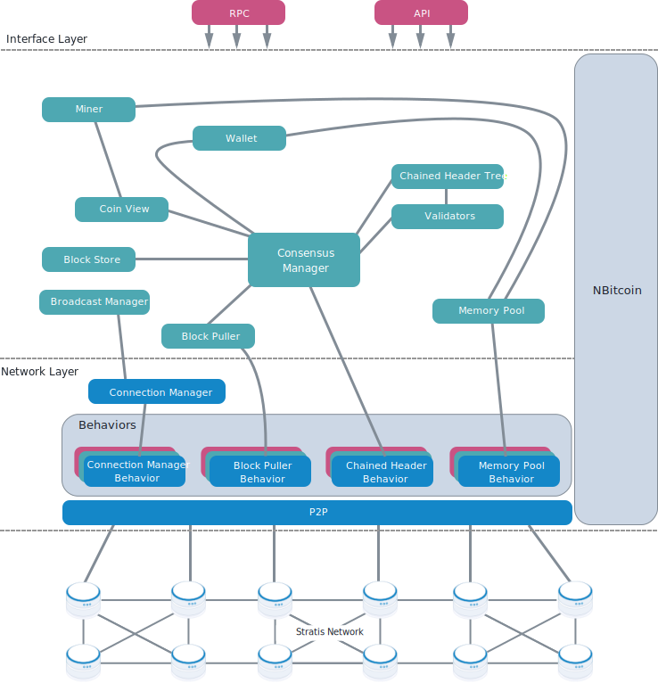

Components and Features Overview¶
The following figure shows the components and features of the Full Node:
{kind=link}
All the components and features are described in the following sections. Several of the sections cover a task that the full node needs to carry out. The individual components are explained along the way.
Accessing the network¶
The P2P and connection manager components are responsible for getting and maintaining access to other peers on the P2P network.
When a full node is connected to the network, behaviors respond to messages received from other nodes.
P2P¶
The P2P component tries to discover more peers on the network. As more peers are found, they are added to a local database. This information is kept up-to-date. The decision about which peer to connect to when a choice is available is designed to be unpredictable. This adds an extra element of security.
The mechanism used to grow the P2P network is the peer discovery loop, which asks the peers it discovers about the location of other peers.
The P2P component also needs to represent the located peers. Once it is represented, a peer can, for example, be asked which version of the protocol it is running. Communication with other peers is achieved by sending messages. Behaviour components on the other peers process received messages depending on whether the message is relevant to them. The P2P component also handles message payloads. A payload is a description of a message, which describes how to take a C# object and serialize it for the network. This also works for incoming messages. Once the message has been identified by its message type, it can be changed from a byte stream to a C# object.
An example of the P2P component messaging¶
A peer is located on the network, and an object is created to represent this peer.
An attempt is made to connect to the peer.
The Peer Discovery Loop asks for a “handshake” to be initialized.
After the handshake has been completed, a
getaddrmessage is sent.The returned
addrmessage containing information on known nodes is handled by the peer address manager behavior.
The Stratis network protocol is 98% similar to the Bitcoin network protocol. More information on the Bitcoin network protocol is available here.
Connection Manager¶
The connection manager contains a list of the connected peers. This component and not P2P is talked to by the higher-level components such as the broadcast manager. This component provides an interface for banning peers. Other components decide who to ban and why, and then use the interface to achieve this. The mechanism for banning the peers is implemented by the peer banning behavior. Peer banning behavior does not consume any message; instead, if a message identifies a banned peer, the connection to the banned peer is dropped.
Behaviour Components¶
There are numerous behavior components in the Full Node. For example: block puller behavior, chained header behavior, memory pool behavior, and block store behavior. You can think of the behavior components as plugins which are responsible for filtering out messages that are not relevant to their related component. For example, memory pool behavior only cares about messages related to the memory pool.
Syncing with the blockchain¶
Once a Full Node has found other peers on the network, it needs to sync its copy of the blockchain. The components involved with this are the consensus manager, the chained header tree, the block puller, the validators, and the coin view.
Consensus Manager¶
Once a connection has been made to other peers on the network, the peers send block headers to the consensus manager. It is the chained header behavior which consumes the messages sent by these peers. When new block headers are received, the consensus manager contacts the chained header tree and informs it that it has new headers. The chained header tree analyzes whether the blocks are interesting and reports back to the consensus manager if they are. The consensus manager’s response to this is to download the full blocks for the headers. The block puller is invoked to download the blocks.
The consensus manager uses the validators to perform validation on the blocks which it receives.
When the consensus manager fully validates a block, the consensus tip moves forward by one and the coin view is updated. The block is also added to the block store.
Chained Header Tree¶
The first thing to realize about the chained header tree is that, as its name implies, it is a tree structure that is built out of block headers. This is distinct from the blockchain, which does not have forks (branches) in it and is made up of full blocks. The chained header tree relates to a concept known as the consensus tip, which is the height in blocks on the blockchain at which a consensus has been reached. If the chained header tree becomes aware of a fork which is ahead of the consensus tip, it requests the consensus manager obtains the blocks for this new fork. Once the blocks are obtained, the consensus manager begins validating the blocks for this potentially interesting fork.
The chained header tree represents a potential state of flux around the consensus tip. It can potentially proceed with validation on a fork that is ahead of the consensus tip only to then switch to a second fork half way through this.
Note
The chained header tree is interested in and can keep a record of any alternative chain. For example, some headers received from the consensus manager could form an extension without a fork.
The chained header tree stores the headers it receives in memory and contacts the validators to perform header validation.
Validators¶
The consensus manager and chained header tree make use of the validators. Validation is broken down into four steps:
Header validation
Minimal validation (block integrity validation)
Partial validation
Full validation
The amount of validation carried out on a block is linked to the concept of a checkpoint. A checkpoint is a point at which the blockchain can never be reorganized behind (think of the blockchain as moving forward). Because blocks before the last checkpoint can never be changed, the validation carried out on them is minimal. The headers are validated, and minimal validation is carried out on the blocks. Part of the full validation is also carried out. This is the part that involves updating the coin view.
All three validation steps (minimal, partial, and full) are performed on blocks that are after the last checkpoint.
Block Puller¶
The block puller works in one of two modes:
IBD (Initial Block Download)
Close to block tip
The mode that is selected depends on whether a block has been reached which seems close to the tip of the chain. If the blocks being downloaded are not close to the tip, IBD mode is used.
IBD Download Strategy¶
A node is aware of the connection speed of the peers and gives smaller tasks to slower peers.
In IBD mode, task distribution is important. Tasks are distributed between peers based on two factors:
The current bandwidth the peer has.
Historical data available on the peer. Nodes are assigned a value between 0 and 150 based on how fast they have proved to be.
Imagine 1000 blocks need to be downloaded. A fast peer with a score of 75 will be asked to download 500 blocks providing they currently have the required bandwidth. Some “fast nodes” can become maxed out, and their ratings will drop as a result of this. Other nodes are configured to only allow a maximum of 10 connections, and thereby maintain a constant high rating.
Block Store¶
The block store uses a NoSQL database (RocksDB) to store the blockchain on disk. The block store is an optional feature that enables a node to supply blocks to other nodes. It is possible to run a lightweight node without this feature. In this case, the node just works with the latest blocks, which are held in a cache.
Coin View¶
The coin view represents the UTXO set. Each time the consensus tip moves forward, it needs to be recalculated. It can be thought of as the amount of STRAX or BTC which is spendable at any given block height. As the consensus tip moves forward one block, the number of UTXOs changes, which reflects UTXOs being spent and new UTXOs being created as payments and change.
The coin view makes use of a database and cache. It can be rewound although rewinding is expensive.
Updating the coin view is the last step of full validation.
Mining new blocks¶
If the mining feature is enabled on the full node, it is able to mine new blocks on either the Stratis network or the Bitcoin network. The proof-of-stake methodology is used for STRAX and the proof-of-work methodology is used for BTC. The following components are involved with this: memory pool, miner, wallet, and broadcast manager.
Memory Pool¶
The memory pool keeps a record of transactions that are not in blocks. The miner component uses the memory pool’s record of pending transactions when it is preparing a block. The memory pool also has an internal coin view, separate from the coin view component, which describes what would happen if all the pending TXs were added to the blockchain. When a transaction is validated and added to the mempool, the node can now relay the transaction to other peers which the node is connected to.
The memory pool is limited by default to 300MB. This means that when the memory pool is full, transactions that do not pay a big enough fee must be removed from the memory pool to create more space. Around 10% of the low paying transactions are removed in response to a full memory pool.
When blocks arrive via the block puller, the transactions within them are removed from the memory pool. This is because these blocks have, after passing validation, the potential to be added to the blockchain; therefore, the transactions they contain should not be included in any new blocks.
The concept of an orphan block is relevant to the memory pool. It relates to the state of flux around the consensus tip as the node analyzes the forks in the blockchain and decides which to follow. When the node abandons a chain and switches to another chain, it creates orphan blocks. The orphans are the blocks from the tip of the abandoned chain back to where the fork occurred with the new chain. The question now is are all the orphaned block’s transactions present in the new chain’s blocks? If any transactions are not found in the new chain’s blocks, they are returned to the memory pool. This gives them a chance to be added to future blocks mined by the node.
Miner¶
The miner component fills block templates up with transactions from the memory pool (sorted by fees). When the block is full, the miner attempts to mine it using either the proof-of-stake function (for STRAX) or the proof-of-work function (for BTC). When a block is successfully mined, it is presented to the peers on the network who will then attempt to validate it.
The Stratis proof-of-stake algorithm¶
The Stratis proof-of-stake algorithm is designed to mine a block every 45 seconds. Broadly speaking, it works by having a target, which can be hit by running a mathematical algorithm; if the target is hit by a miner, the miner can mine the block. The Stratis proof-of-stake algorithm is designed so that it takes about 45 seconds for one miner to hit the target. The more STRAX the miner has staked, the more likely they are to be the miner who hits the target. For example, if a miner is in possession of 40% of the STRAX currently being staked, they have a 40% chance of being able to mine a block during each block cycle.
Because the algorithm is dependent on the STRAX that a miner is staking, the wallet is contacted to check the miner’s staking power. UTXOs are retrieved from the wallet and checked that they are valid for staking.
Wallet¶
The wallet component is interested in transactions from three sources:
Historical transactions stored in the block store. These are obtained via the consensus manager.
Transactions in blocks that are arriving from other peers on the network.
Transactions in the memory pool.
In all cases, the wallet iterates through all the transactions in the block to see if any of the UTXOs match the wallet’s addresses.
Broadcast Manager¶
The broadcast manager is used by the wallet to send transactions to all the peers. This component gets a list of peer connections from connection manager and then sends the transactions.
Node-wide Libraries¶
The full node contains some internal libraries to supply functionality to all components. It also makes use of one external library.
Core¶
This library contains code related to the state of the blockchain. It enables components to share their state between each other, so they can get an overall view on the full node. For example, the consensus tip and the block store tip are shared between all components, and this library enables the sharing to be done without creating a dependency on the consensus and block store features.
Interfaces are employed to pass information around. For example, the initial block download state is implemented in the consensus feature; other components just pass around an interface to it.
NBitcoin¶
NBitcoin is an external Bitcoin library for the .NET platform written in C#. It implements many Bitcoin Improvement Proposals (BIPs). The Stratis Full Node uses NBitcoin for multiple functionalities including running scripts and cryptographic hashing and signing.
Interfacing with the Full Node¶
It is possible to connect to a full node using Remote Procedural Calls (RPCs) and a RESTful API. The API exposes the same API as Bitcoin and includes some extra features.
These endpoints are fully documented and can be found later on under the API Documentation.